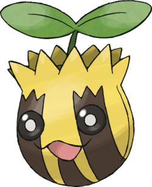

Tournegrin #191
Sunkern
DE 1/4
Niveau 1
Taille TP
Type 
Classe d'armure 11
Dé de vie d6
Points de vie 18
Vitesse 3 m
| FOR | DEX | CON | INT | SAG | CHA |
|---|---|---|---|---|---|
| 9 (-1) | 9 (-1) | 15 (+2) | 6 (-2) | 12 (+1) | 10 (+0) |
Jets de sauvegarde Constitution
Compétences Nature
Vulnérabilités 


Résistances 


Sens perception des vibrations 6 m
Talents
Chlorophyle. TODO TRADUIRE This Pokémon’s speed is doubled in bright sunlight.
Force Soleil. TODO TRADUIRE Damage rolls for this Pokémon get an additional +2 during bright sunlight.
Talents cachés
Matinal. TODO TRADUIRE This Pokémon has advantage on rolls to wake from sleep.
Évolution
Tournegrin peut évoluer en Héliatronc à partir du niveau 7 avec l'aide d'une pierre Soleil. Quand il évolue, il gagne 13 points de caractéristiques. Il ne peut pas dépasser 20 dans une valeur de caractéristique.
Capacités
Niveau 18 Canon Graine